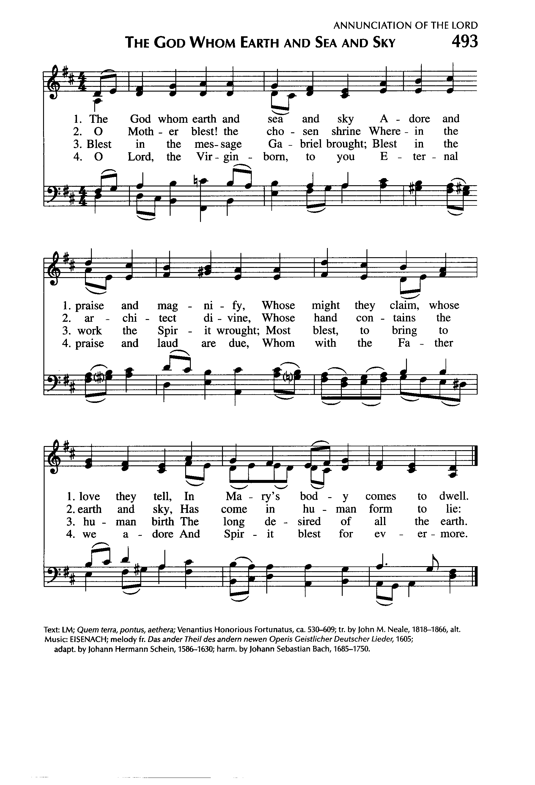

|
|
【慈愛與憐憫】 |
|
|
慈愛憐憫我神之名，呼召我們以愛服事，
|
|
https://hymnary.org/hymn/JS2012/page/790 EISENACH Johann Hermann Schein, 1586-1630
 |
|
|
|
|
-

https://youtu.be/UfKvwwIwiyU
| Short Name: | R. T. Brooks |
| Full Name: | Brooks, R. T. |
| Birth Year: | 1918 |
| Death Year: | 1985 |
Also known as Rev. Peter Brooks, Reginald Thomas Brooks
Educated at Mansfield College, Oxford, Brooks was a minister of the United
Reformed Church, and served as producer of the religious broadcasting
department for the British Broadcasting Corporation.
Tune Information
| Title: | EISENACH (Gesius) |
| Adapter: | Johann Hermann Schein (1628) |
| Composer: | Bartholomäus Gesius |
| Meter: | 8.7.8.7.8.8 |
| Incipit: | 13455 43256 71766 |
| Key: | D Major |
| Source: | Gotha Cational, 1715 |
| Copyright: | Public Domain |
Notes
MACHS MIT MIR was first published in the collection of music Das ander Theil des andern newen Operis Geistlicher Deutscher Lieder (1605) by Bartholomäus Gesius (b. Münchenberg, near Frankfurt, Germany, c. 1555; d. Frankfurt, 1613). A prolific composer, Gesius wrote almost exclusively for the church. Gesius studied theology at the University of Frankfurt and pursued his musical studies privately. He was a cantor in Münchenberg, a private tutor for a poet's family in Muskau, and a cantor at the Marienkirche in Frankfurt from 1593 until his death. He composed numerous settings for pre-Reformation Latin songs and for Reformation hymns (with Luther's hymns well represented) and published them in ten volumes, including his Psalmodia Choralis and Geistliche deutsche Lieder (1601). He also wrote a St. John Passion (1588), a St. Matthew Passion (1613), important settings of the Magnificat (1607), and a theoretical work, Synopsis musicae practicae (1609).
Johann H. Schein later adapted Gesius's tune for his own hymn text "Machs mit mir, Gott" (1628)–from which the tune got its name–and published it in the second edition of his famous Cantional (1645). [Hymnary ed. note: Schein died in 1630, so someone else published the second edition] Johann S. Bach (PsH 7) used the tune in his St. John Passion (1724) and in his Cantatas 139 and 156. An isorhythmic version of the tune was published in the 1959 Psalter Hymnal under the name EISENACH. Dale Grotenhuis (PsH 4) prepared the harmonization in 1985 for the 1987 Psalter Hymnal.
Like so many chorales, MACHS MIT MIR is in bar form (AAB); its rhythms alternate between duple and triple–in this case the use of the two main forms of musical rhythm is a nice way of suggesting that God's providence covers all! Unison singing may be best on the stanzas, with harmonizing optional on the refrain. Sing this tune with much energy to an animating tempo.
--Psalter Hymnal Handbook